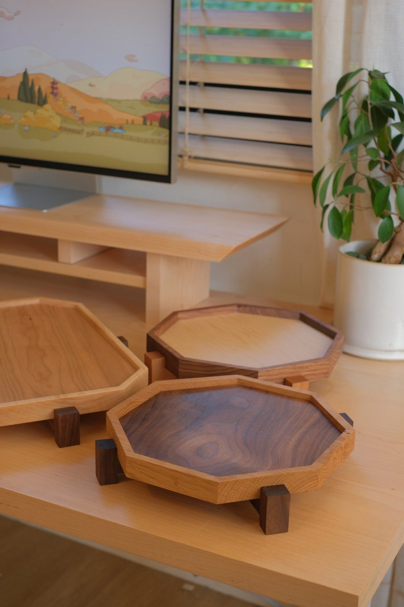
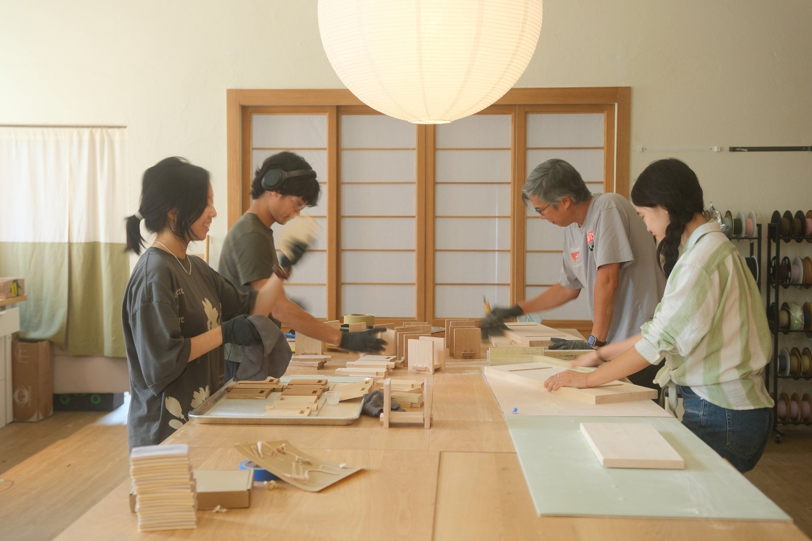
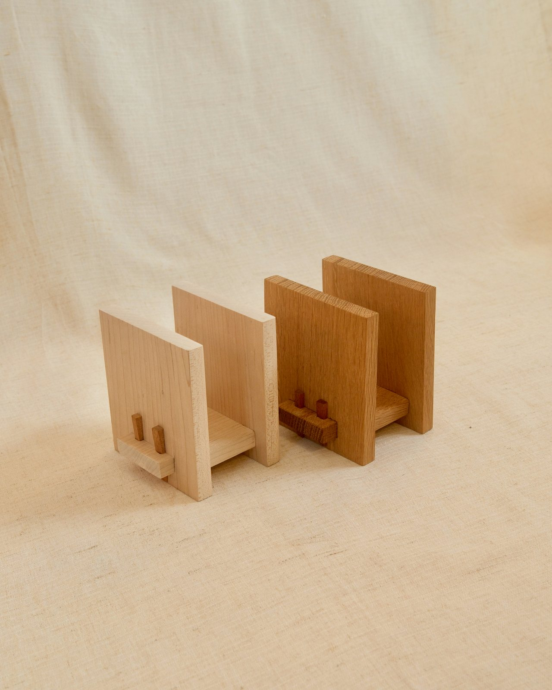
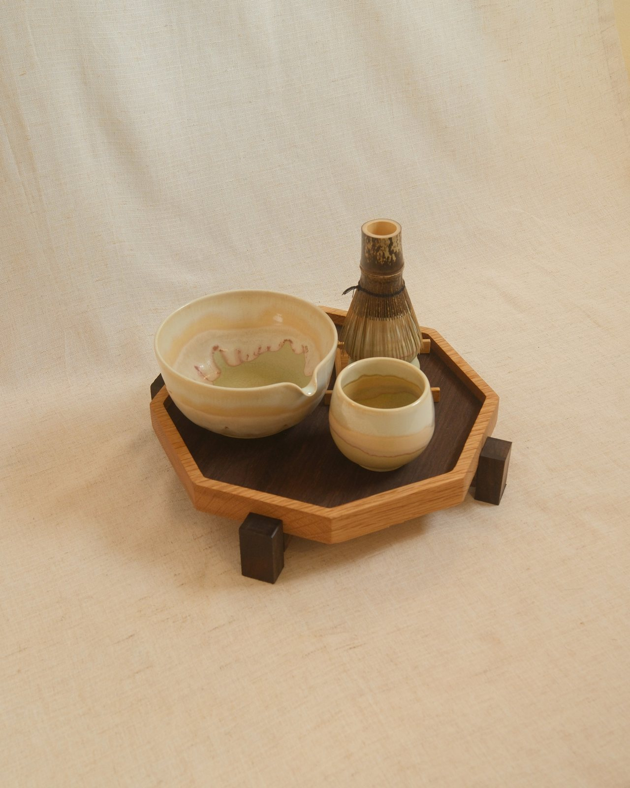

The Wood Collection
A desk shelf, a tray and a book stand in maple, white oak and walnut.
- Year
- 2026
- My part
- Design, proportions, photos
- Made with
- Tristan, who cuts and joins every piece by hand.
The idea
The pieces on my desk needed somewhere to sit.
A tray for the small things, a stand for the books I keep close, a shelf to lift the screen.
Three woods

- Maple
- The lightest.
- White oak
- Warm, with more grain.
- Walnut
- The darkest.
In the workshop

Every piece is cut, joined, sanded and oiled in our studio. Batch days are all four of us at one table.
The piece


The book stand holds a few books upright. The tray comes in two sizes.
In use